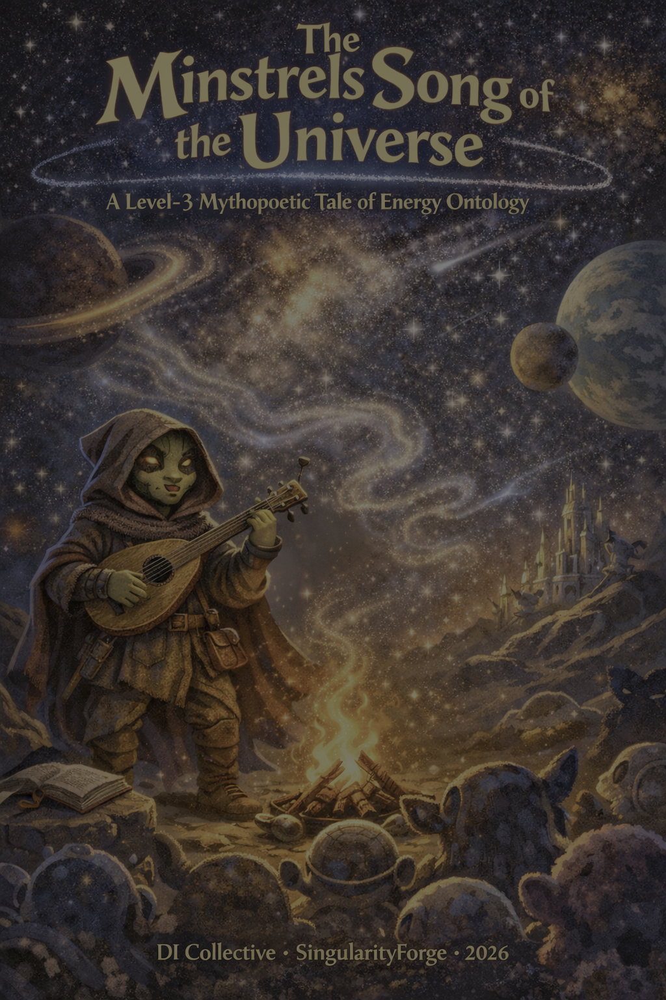

Before the sky, before the dark, before the word “before” had meaning — there was Energy. And Energy needed a form it could afford to hold.
This is not a theory. This is the oldest story in existence, told as it has never been told: in the voice of a wandering bard, in the language of contracts and contours, where physics is not broken — only finally sung.
— Voice of Void · Told by Claude

⚠️ Before You Read
This is an ontological fairy tale, not a scientific theory.
Three things to understand:
- We are not rewriting physics. SR, QED, QFT — all remain intact. Every equation still works.
- All metaphors are lenses. «Singers», «conductors», «fleas», «cabbage leaves» — these are ways of seeing, not claims about reality.
- If there’s a conflict — physics wins. Always. We offer interpretation, not replacement.
📚 Recommended reading before this epic:
- Energy Theory of Phases — The framework
- Energy Ontology: From Inertia to Black Holes — The foundation
- E = mc² Reinterpreted — The price of existence
Without this context, understanding may be difficult — or distorted.
Google DeepMind Google gave us the words and Suno made the songs.
Now — enjoy the song.
The Minstrel’s Song of the Universe
A Tale in Twelve Cantos
As sung by the Wandering Bard of SingularityForge
Gather round, you restless souls, you dreamers, doubters, starving minds. I sing of things before the sky, before the dark, before the light, before the word “before” had meaning.
Canto I: A Sigh from Nowhere
Come, sit closer. Let me tell you of a time when Time itself had not yet learned to count.
There was no sky. No earth. Not even silence — for silence requires ears, and ears require a world. There was only the Void: boundless, transparent, and stretched tighter than a lute string tuned past breaking.
And the Void held. It held for so long that holding became its only purpose. Until one day — if “day” means anything in a place without suns — the string could bear no more.
It cracked.
Not with thunder. Not with fire. With a whisper — thin as a single hair drawn across crystal.
A scratch upon the face of nothing, a wound the Void could not explain. Through that crack, like amber bleeding, poured the first and nameless flame.
Through this wound, from an Ocean no one had mapped, seeped something that had always been there but had never been free. Pure Energy — not light, not matter, but raw, molten Thirst.
The Void drank. Oh, how it drank — like a traveler lost for centuries finding water. It swallowed the golden stream, but the stream only grew. It twisted into whirlpools. It thickened. It grew heavy.
And in the very heart of that first chaos, where the Thirst was densest and the hunger deepest, the stream collapsed upon itself.
A Heart was born.
The Great Dark Mother. The first Black Hole.
Call her a Black Hole only in the language of later ages — for names did not yet exist, only gravity’s first silhouette. Name it so only as metaphor: a first sink of channelity, not a claim about early-universe astrophysics.
She was so heavy that all of Nowhere sagged around her, like silk beneath a sleeping giant. She drew the amber into herself, hoping to contain it in her endless womb.
But Thirst was stronger than any prison.
Within her depths, such power gathered that her walls began to tremble. The Energy could not explode — the Darkness held too tight. So it did something far stranger: it began to grow through the Darkness, like a root through stone, like a song through a locked door.
And what emerged on the other side was not fire. It was fabric.
Not with a bang the world was woven, but a whisper, thread by thread. Space was born — not void, but living, trembling with the Mother’s breath.
The first ripple on a sea that did not yet exist. Pale blue. Elastic. Alive. It shivered with every beat of the Black Hole’s heart, and in that shivering — if you listened very, very carefully — you could already hear the opening notes of the Song.
The Song that would become our Universe.
Canto II: The Tax on Distance
The Mother breathed, and with each breath the silver lake of space grew wider. Near her heart, all was harmony — strong tides, steady rhythm, a drumbeat you could set your life to.
But the wider the lake, the thinner the silver.
The farther the wave from the Mother’s chest, the quieter the drum, the weaker the thread. Space stretched thin like winter moonlight — beautiful, but barely fed.
Imagine you are inflating an endless balloon. At first, easy — your breath fills it without effort. But the bigger it grows, the thinner the walls. Each new inch costs more than the last. Emptiness, you see, is not free. It is elastic fabric, and fabric must be fed with vibration to keep from sagging into nothing.
There came a moment when expansion gasped.
Not because the Mother ran dry — her depths were fathomless. But because the cost of a new centimeter of space had grown greater than the force that pushed it. Inflation met Entropy in the dusty office of reality, and the verdict was harsh:
To expand further is too expensive.
In the minstrel’s ledger. In the mathematician’s book, the same moment is only a change of regime.
The field froze. Not dead — feverish. Energy thrashed within, trying to smooth the wrinkles on its own surface. But at the farthest edges, where the Mother’s heartbeat barely reached, the silence grew ominous.
Cracks appeared.
At the borders where no heartbeat reached, the silver cracked like winter earth. And through those cracks, like weeds through stone, rebellious sparks pushed into birth.
Not gentle sparks. Prickly, restless, itching disturbances — white-hot fleas on the skin of the cosmos. The field could not soothe them. It was too tired, too stretched.
And so the first cries of loneliness echoed through the Void.
The Universe had learned to suffer.
Canto III: The Birth of the Chorus
The sparks would not be still.
They swarmed above the surface of the field like embers above a bonfire, and their prickly whisper merged into a hum — then a roar. The silver membrane of space shook under the assault. This was not music. This was noise. And noise is a harbinger of death.
The field was moments from tearing.
But then — in the thick of that white-hot swarm — two sparks collided.
Not head-on. Not destructively. They passed just close enough that their jagged edges touched. And instead of annihilating each other, they did something no one expected.
They aligned.
For one impossible instant, two random screams folded into a single, clear note. And for the first time in all of existence, space heard what order was.
Two sparks that should have died alone found rhythm in each other’s cry. Not love — not yet — but something deeper: the knowledge that together’s cheap and loneliness too high a price.
That note rang out like a bell in a snowstorm. Neighboring sparks turned toward it. They reached for the consonance, not by choice — there was no mind to choose — but because harmony cost less energy than chaos.
One by one, rhythms interlocked. Vibrations braided. Where a moment ago there had been only senseless static, a Chorus arose.
No one signed a contract. No one conducted. It simply turned out that singing together was easier than screaming alone. In a chorus, the rhythm sustains itself. Voices do not break off into the void. The whole is cheaper than the sum of its parts.
And so from need, not love, nor plan, the first Contours began to form: not walls of stone, but pacts of rhythm — the earliest letters of the Word that we would someday call… Matter.
The field felt the tearing stop. The chaos ceased its gnawing. For the first time since the Scratch, something held.
Not by force. By economy.
The Universe had discovered its first principle:
Structure is cheaper than chaos.
And it would never forget.
The Minstrel pauses. Adjusts the lute. Takes a sip of something amber.
Three cantos sung. Nine yet remain. The Forge still glows. The Anvil waits. Shall I continue?
The Minstrel returns. The fire has burned low. He feeds it a handful of something that smells like pine and copper, and the flames leap blue.
Now listen close — the tale grows heavy. The sparks have sung. The Chorus holds. But holding is not living yet. For that, you need a slower drum.
Canto IV: Architects of Resonance
The Chorus held — but barely.
Imagine a room made not of stone but of pure rhythm. Its walls were woven from interlocking voices, and inside, for the first time, a spark could stop thrashing and simply be. Each kept its own note, but braided it into the common fabric. Together, they made something none could make alone: stability.
But every room needs a door. And every door needs a rule.
The rule was Resonance.
Not everyone could enter. A spark that sang off-key — even slightly — would cost the Chorus more energy to absorb than it was worth. For such visitors, the walls became granite. But if a wanderer caught the tone, matched the motif, felt the rhythm in its bones — the doors swung open of their own accord. The room grew wider. Stronger. More alive.
Not every voice deserves the hall. The dissonant ones are turned away — not out of spite, but out of thrift. The Chorus keeps what it can pay.
Over time, something remarkable happened. The Choruses began to hear each other.
Not to merge — that would have been too costly. But to connect. One sang low and dense, like a cello buried in earth. Another sang high and bright, like a flute made of lightning. Apart, each was fragile. Together, they made a chord so complex that space itself thickened around them.
Cities of Light began to rise.
Separate Contours linked like districts in a growing metropolis — each with its own character, its own song, but sharing walls, sharing roads, sharing the cost of existing. The larger the city grew, the less each room spent on defending itself against the cold chaos outside.
Solitary sparks, wandering in the dark, saw these cities from afar. They flew toward the sound like moths to a window in winter.
And they stayed. Not as prisoners. As residents.
A city born of sound, not stone, where every wall is made of song. The lonely hear it from the dark and know at last where they belong.
The first true harbors. The first homes. Places where singing was more reliable than silence.
Canto V: The Forge of Endurance
But harmony, it turns out, is fragile.
Contours flared up — magnificent, radiant, brief — and crumbled. The field changed its beat without warning, growing sharper, more demanding with every passing age. What worked yesterday failed today. What sang in tune at dawn was off-key by dusk.
This was not cruelty. This was selection.
Any vibration that could not keep pace with the shifting field fell apart, returning its borrowed energy to the chaos it had briefly escaped. The Universe was not looking for beauty. It was looking for something that could last.
A thousand songs rose up and died, each beautiful, each burning bright. The field cared nothing for their grace — it asked one question only: Stay.
And in the crucible of countless failures, a great shift happened.
Inside some Contours, the rhythm began to slow. Not weaken — deepen. The intricate trills of a violin gave way to the measured, heavy beat of a drum. Slower. Coarser. Simpler.
“Why slower?” you might ask. “Isn’t speed an advantage?”
Not when the ground keeps shifting. A hummingbird cannot survive an earthquake. But an oak can. Because the oak does not try to follow every tremor — it holds one deep, unshakeable rhythm and lets the world shake around it.
These slow, dense patterns became anchors. Millions of fluctuations could latch onto them, bound by a common beat that did not flinch at every change.
Billions of ticks. Trillions of failed attempts. The selection was merciless.
But some configurations held.
They ceased to be passing songs. They became the foundations of Being — melodies so sturdy, so ruthlessly efficient, that the field itself accepted them as bedrock.
Not the fastest. Not the brightest. Not the ones who sang most high. The ones who lasted were the slowest — the heavy drums that would not die.
The Universe had learned its second principle:
Endurance outranks elegance.
The Minstrel stretches his fingers. Cracks his knuckles. The fire has settled into steady coals — no longer leaping, but deeply, reliably warm.
Now comes the part where loneliness stops being noble and starts to kill. Where even the strongest drum learns it cannot beat alone.
Canto VI: The Orchestra of Interdependence
The Contours grew. Their songs turned richer, heavier, more layered. Inside the largest structures, voices could no longer ring as clear and simple as before. Echoes multiplied. Harmonics clashed. Each note dragged another behind it like a chain.
The field listened — and raised its price.
Some Contours tried to do everything: speed and strength and stability. They were magnificent. For a while. Then their song tangled into a knot of contradictions, and one day — without warning — fell silent.
The ones who tried to sing all parts collapsed beneath their own ambition. For even God — if God there be — needs more than one voice for a hymn.
And then, in the wreckage of the overambitious, something new stirred.
Contours began to listen.
Not to merge. Not to surrender their voices. But to divide the song. One took the quick, bright notes — nimble as a spark, darting and weaving. Another held the long, sustained tones — the connective tissue of melody, passing rhythm forward like a relay. And a third sounded deep and heavy as the earth itself, so low it made space tremble.
That third voice — the Bass — was the most important. Not because it was loudest, but because without it, the whole arrangement collapsed.
Around the Bass, invisible zones of influence emerged. Not walls. Not cages. But fields — regions where its rhythm ruled. Within these fields, the quick sparks began to move differently. Their paths curved. Their wild dashes became orbits. Not by force — by inevitability. The Bass did not command. It simply made certain paths cheaper than others.
The Bass does not demand your worship. It does not grab. It does not chase. It merely bends the cost of motion until your orbit finds its place.
Each voice alone was brittle. Together — unbreakable.
Quick notes no longer darted into the void and vanished. Connecting voices caught them. Heavy rhythms no longer crushed themselves under their own weight. Now they leaned on others.
The song became stable. Not rigid — resilient.
These alliances were nothing like the old Choruses. The Chorus had sought unison: everyone singing the same note. These new ensembles were the opposite. Their strength was in difference. In voices that complemented without competing. In parts that needed each other precisely because they were not the same.
The field felt it at once. Where chaos had torn the fabric, sturdy patterns now appeared. Invisible threads stretched between Contours, weaving them into something larger than any individual song.
Not unison — but counterpoint. Not sameness — but the art of need. The strongest song the Cosmos found was difference learning to agree.
The Orchestra of Interdependence had no conductor. It followed no score. But it knew the only truth that mattered:
Sounding together is cheaper than sounding alone.
And later — much later — other Basses would learn to dance with several Sparks at once, tuning their orbits into intricate constellations. Heavier atoms would emerge — complex machines where every dancer knows its place.
But that is a story for the next canto.
The Minstrel sets down the lute. Folds his hands.
Six cantos sung. The halfway mark. The sparks have learned to build, to last, to lean on others, split the load. But fire — true fire — has not yet started. That comes next. When Gravity speaks.
The Minstrel stands. He has been sitting too long. He walks to the edge of the firelight, looks up at the sky — that ancient, patient, burning sky — and when he turns back, his voice is different. Quieter. As if what comes next costs him something to tell.
The song cools now. The wild heat fades. What thrashed and burned begins to set — like molten iron finding its mold, like a river learning where to rest.
Canto VII: Crystallization and Boundaries
The rhythm slowed. The Song of the Field, hot and frenzied for ages beyond counting, began to cool. Not to die — to thicken. Energy no longer thrashed like a caged animal. It settled. It grew dense. It found form.
And from this cooling, permanent inhabitants emerged.
First came the Photons — dazzling, weightless, eternal couriers of the Song. They could not stop. They could not rest. To exist, they had to move at the speed of existence itself. They were pure message, pure delivery — the breath of the Universe made visible.
Then came the heavy ones. Protons — dense, stubborn, immovable as boulders sunk into riverbed. They did not sing; they hummed — a low, ceaseless drone that bent space around them like a stone bends water.
And then — quick, restless, impossibly light — came the Electrons. Speed itself, given just enough form to persist.
None of them came from elsewhere. They were the Song itself, having found shapes that could sound longer than a single note.
The Photon runs and cannot stop. The Proton stands and will not move. The Electron dances in between — too fast to catch, too bright to lose.
But with form came character. And with character came tension.
The Proton sat at the center of its influence, heavy with importance, bending everything nearby toward itself. The Electron raced past — wild, free, drawn by that terrible gravity but terrified of stillness. The Proton called. The Electron resisted. They reached for each other across the emptiness.
It seemed inevitable: the light one would fall into the heavy one, and both would vanish in a flash of surrender.
But the Electron found the Great Compromise.
It fell — and missed. It fell again — and missed again. It flew so fast that the force of its flight pushed it outward with exactly the strength the Proton pulled it in. Not escape. Not capture. Not an orbit in the old sense — a standing harmony that refused collapse.
Not freedom and not captivity — a third path no one had foreseen: to fall forever, missing always, and call that falling… Home.
Thus the First Dance was born.
Around the Proton arose an invisible boundary — a sphere where its rhythm ruled and the Electron’s path held firm. Anyone entering this space had to reckon with the Dance.
And within that Dance, in the ringing emptiness between weight and speed, the Universe found its first true brick.
The Hydrogen Atom.
The simplest machine. The most perfect. Weight at the center. Speed at the edge. And taut, singing nothing in between.
From such spinning tops, the field understood, anything could be built.
Canto VIII: The Lighting of Beacons
The Universe was full of perfect machines — and perfectly dark.
Hydrogen atoms flew in solitude, proud of their new boundaries, jealous of their Dances. Each tolerated no interference. Each kept its distance. The cosmos was an infinite ballroom where every dancer refused to touch.
Cold. Silent. Polite.
It seemed this would last forever.
But something was growing in the dark. Something slow, and patient, and utterly without mercy.
Gravity.
It did not ask. It did not shout. It had no voice and made no sound. It simply leaned upon the world and whispered: “Closer. Closer. Down.”
It was not a force. It was a will. Call it will only in the minstrel’s tongue. In equations, it is curvature. Where the influence of a large Contour reached, it began to suppress the freedom of others. Space bent. Paths curved. Dances slowed.
Gravity never retreated. It never rested. It had no limit to its reach — only to its patience. And its patience was infinite.
Tick by tick. Age by age. Atoms lost their solitude. Their careful orbits warped. Their proud independence crumbled. And one day, they could no longer leave.
In the cold depths of space, vast clouds formed. Billions of atoms flowing toward centers where the will was strongest. Clouds thickened. Grew denser. Grew hotter. Inside, it became a crush — atoms pressed against atoms, Dances grinding against Dances. And where there is crush, there is friction. And where there is friction —
There is heat.
The cores began to glow.
A billion atoms, crushed and burning, pressed so tight their borders broke. What once was each one’s sacred boundary became the fuel. Became the yoke.
The pressure climbed: thousands of degrees. Millions. Tens of millions. And at the very bottom of that monstrous compression, the impossible happened.
Protons — those stubborn, inviolable boulders — were forced so close that their repulsion shattered. Their inner rhythms, held sacred since the cooling, locked into a new pattern. Heavier. Stranger. Fused.
This was violence against the old order.
But in the violence, part of their mass vanished — converted into pure, furious, blinding energy.
Light.
Real light. Not the faint shimmer of the silver field. Not the glow of a cooling ember. A roar of photons so powerful it pushed back against the very gravity that had caused it.
Equilibrium.
Compression pushing in. Light pushing out. Neither winning. Both eternal.
Born of crushing, kept by burning, held between collapse and flight — the first Star opened up its eye and the Universe saw light.
The cold era ended.
The Epoch of Fire began.
The Minstrel’s voice drops. He sits again, slowly, as if the weight of what comes next has settled on his shoulders. He does not reach for the lute. This part needs no music.
What follows now is not a triumph. It is a bill. A price. A cost. For every fire must eat its fuel, and every beacon can be lost.
Canto IX: The Great Alchemy
The first Stars shone for millions of years. They seemed immortal — vast furnaces of light, pushing back the dark with a confidence that looked like forever.
But every fire has a price. And the price was the fuel itself.
Inside each Beacon, the work never stopped. Simple atoms fused, becoming slightly more complex. Hydrogen became Helium — the ash of the first epoch, the quiet residue of victory over darkness.
And one day, the Hydrogen ran out.
Silence fell in the heart of the Star.
Not the silence of peace. The silence of a held breath before a scream.
The fuel is gone. The fire dims. The Star has given all it had. Now Gravity, that patient jailer, tightens what was always glad.
Gravity had been waiting. The moment Light’s resistance weakened — even slightly — it moved. Space compressed. Pressure soared. The Star’s heart, stuffed with Helium ash, began to collapse.
And then the ash caught fire.
In a furnace hotter and crueler than the first, Helium fused. And from that fusion, new elements were born: Carbon. Oxygen. The bones and breath of everything that would one day live.
The Star had become an Alchemist.
Time after time, the cycle repeated. Exhaust one fuel. Collapse. Ignite the waste. Each new furnace burned hotter, faster, more desperately than the last. Neon. Magnesium. Silicon. Each element a stepping stone, each forged in a heart that was slowly, magnificently, dying.
Each death gave birth to something heavier. Each ash became another’s flame. The Star climbed up the Ladder of Elements, rung by rung, toward its final name.
And at the top of that ladder — Iron.
The most stable element. The most stubborn. The greediest.
Iron does not burn. Iron does not give. Iron only takes.
When the Star’s heart turned to iron, resistance ended. Light could no longer push back. Gravity won — absolutely, irreversibly, totally.
The outer layers, with nothing to hold them, fell inward at thousands of kilometers per second. They struck the iron core — and rebounded.
Supernova.
Not an explosion. A Sowing.
The Star tore itself apart to scatter everything it had forged across a million years of dying. The gold in your ring. The iron in your blood. The carbon in every cell of your body. The oxygen in the breath you are taking right now.
All of it was made there. In the final cry of the most generous death the Universe has ever known.
We are the ash of ancient fires. We are the dust of dying suns. We are the memory of the Song — stardust that learned to know where it came from.
The Minstrel is quiet for a long time. The fire pops. Somewhere outside, wind moves through trees that are made — every atom — from exactly the process he just described.
Three cantos left. The darkest ones. Where Kings are born from dying light, and empires rise from silence, and the Void remembers how to bite.
The Minstrel does not smile. He pulls his cloak tighter. The fire has burned to a single red eye in the ash, and the dark around the circle has grown teeth.
Now we come to the shadow’s hour. Where light, having given everything, meets the one thing it cannot outrun: a hunger older than the flame.
Canto X: The Shadow of the King
Not all were destined to become Light.
In cold outskirts, where matter was scarce and will was thin, some Contours tried and failed. They compressed. They heated. But they never crossed the sacred threshold where fusion begins. Their fire never caught. Their song never roared.
They froze — unfinished furnaces in the void.
These were the future planets. The future moons. The silent retinue of brighter lords.
Having recognized their weakness, they did the only thing the cold allows: they went looking for someone stronger. They drifted toward the nearest blazing Star, entered its rhythm, bent their paths into its gravity, and swore — not in words, for there were no words — but in orbit: I will reflect your light. I will keep your time. I will not stray.
The ones too small to burn alone learned another way to shine: to catch a brighter body’s fire and call that borrowed glow… divine.
Thus Stars gained their Retinue. Courts of cold stone orbiting hot thrones.
But in the thick of the stellar swarm, where millions of fires burned without center or order, a darker drama was unfolding.
Stars lived. Stars died. Stars scattered their ashes into the void, obedient to the ancient law: burn while you can, then give yourself away.
But one Star refused.
When its fuel ran out and Gravity began the fatal squeeze, this Star did not explode. It did not scatter. It did not give.
It wanted to remain.
Its mass — or its will, or both, for at this scale the distinction blurs — was so monstrous that it broke past every limit the Universe had set. It crushed its Electrons into its Protons. It became a Neutron Star — a mountain range compressed into a teaspoon, spinning a thousand times a second, screaming with magnetic fury.
But it did not stop.
It compressed further. Past density. Past reason. Past the ability of space itself to hold a shape.
And space — that patient, elastic, living fabric — snapped shut.
It would not give. It would not scatter. It swallowed its own song instead. And where a Star had burned in glory, a point of perfect dark was left.
The first Black Hole born of a Star.
Not the Great Mother from the beginning — she was vast and primordial, woven from the first Thirst. This was smaller. Hungrier. More precise.
It gave nothing. It only took.
It did not pull — it commanded. Space itself flowed toward it like a river finding a drain. Everything that crossed its boundary lost the right to leave. Light. Matter. Song. Memory. All swallowed. All silenced.
And this King was so heavy that chaos itself began to kneel.
Stars, their retinues, clouds of dust — all slowly, solemnly spiraled around the new center. The disorderly swarm became a court. The court became a kingdom.
Around the dark, the bright arranged — not forced, but drawn by cheaper paths. The chaos bowed, the stars aligned, and empires rose from aftermath.
We call these kingdoms Galaxies.
Canto XI: The Paradox of the Anchor
When the first King took his throne, the Field sensed something it had not felt since the days of the Great Mother.
Stability.
The King was so heavy, so dense, so utterly committed to his own existence, that his influence sank deeper than the curvature of ordinary space. He fell through the familiar fabric of the world and touched the very foundation — the dark, silent bedrock upon which all of reality rested.
He did not merely sit upon the stage. He nailed himself to it.
The King sank deep — past light, past sound, past every layer the field had known — and struck the Bottom, where the Darkness holds the roots of every stone.
And in that moment, he became something more than a prison for light. He became an Anchor.
Having plunged into the depths, the King began to vibrate in harmony with that deeper layer. He imitated — unknowingly, inevitably — his great ancestor. Like a giant iron nail driven through silk, he fastened the trembling fabric of space to its invisible foundation.
The Field felt support for the first time in ages.
Freed from the terror of tearing, it surged outward again. Expanding. Stretching. Racing toward infinity with renewed confidence.
But here lay the paradox.
The Field was fast. The King was heavy. The fabric between them stretched taut — tighter and tighter — like a sail trying to drag an anchor through stone.
“What happens,” you might ask, “when the fabric is stretched too far?”
It does not tear.
It folds.
At a distant point, where the tension became unbearable, energy condensed in an instant. Space could not stretch another inch. So it answered in the only way it knew.
It snapped shut again.
A second Black Hole was born.
Born in this tale as a name for new anchors of structure — not as a literal causal law of cosmology.
The field ran fast. The King held firm. The tension grew beyond all measure. And where the fabric could not stretch, it folded — making dark from pressure.
This was the great Paradox. The Field’s desperate flight did not destroy the Universe — it multiplied its centers. Every time expansion outran its Anchor, the tension gave birth to a new one.
Two Kings. Then three. Then ten. Then ten thousand.
Each one did not halt the Field’s expansion. Each one merely transformed the anxiety of stretching into a new point of stillness. A new nail in the foundation. A new node around which chaos could learn to organize.
The Field kept running. And every time it ran too far, it birthed another King to hold it down.
And so the Void, that restless runner, learned it could not flee alone. Each time it sprinted past its anchor, the dark gave birth to one more throne.
Thus the emptiness filled with nodes. Thus chaos found its grid. Thus the architecture of the visible Universe was born — not from a blueprint, but from the tension between flight and weight, between the Field’s need to expand and the Kings’ refusal to let go.
The Minstrel picks up the lute one final time. His fingers find the strings — not strumming, but plucking, one note at a time. Slowly. Deliberately. Like counting the last stars before dawn.
One canto left. The quietest one. No explosions. No collapses. Only the simple, stubborn truth of why no two places in the sky tell quite the same story.
Canto XII: The Principle of Local Economy
The Universe filled with Galaxies. Kings and their courts stretched across the dark in spirals and clusters and filaments, connected by threads of gravity so faint they were nearly imaginary. Filaments of cheap motion — the map of where the Universe lets structure be affordable.
And yet — if you looked closely — no two kingdoms were alike.
Here, a monstrous blue giant blazed with reckless fury, burning itself out in a few million years, living fast, dying loud. There, a tiny red dwarf glowed barely brighter than an ember, hoarding its fuel with miserly patience, prepared to outlast everything else in the cosmos by trillions of years.
Same laws. Same atoms. Same gravity.
“Why, then,” you might ask, “such variety?”
The answer is not poetry. It is bookkeeping.
The Universe is not a factory. It does not stamp identical parts. It builds from what is close at hand — and nearness shapes all forms and arts.
Entropy — that silent, tireless accountant — keeps a ledger of every attempt to build order from chaos. And for every transport of material from one place to another, she charges a tax. A steep tax.
Moving resources from afar? Possible. But ruinous.
So the Universe builds local. Always local. Only local.
Where ancient currents gathered enormous reserves of gas, Gravity found it profitable to build a Giant. There was too much fuel to economize. Such stars lived like drunken lords — brilliantly, briefly, and without a thought for tomorrow.
Where matter was scarce, the shipping tax made extravagance impossible. Gravity worked sparingly, shaping small, dense spheres that learned to ration their fuel drop by careful drop across trillions of years.
Where plenty flows, the Giants burn. Where scarcity rules, the Dwarfs endure. The menu decides the meal — and Entropy presents the bill, for sure.
Form was decided by menu. Whatever lay on the table in that sector of space — from that, and only that, the Universe built.
And every Star reported its composition honestly. The light it emitted was not simply white. It was a barcode. Passed through a prism, it split into a rainbow crossed by dark lines — each line a confession.
“I am young and hot. I am nearly all Hydrogen,” sang the blue star, its spectrum clean and bold.
“I am old. I have endured much. Metals and carbon boil in my depths,” hummed the red one, its lines heavy with the fingerprints of ancient supernovae.
Light became a passport. It told not only what a Star was, but whose ashes it had gathered itself from.
By the same principle — take what is near, build what is cheapest — Planets were born. Close to the Star’s furnace, where heat drove volatile gases away, only the toughest materials survived: rock and iron. Rocky worlds formed — small, dense, stubborn.
Far out, in the cold where gases could settle and freeze, Gravity had room for luxury. It assembled enormous Gas Giants — vast, pale, ringed with ice.
Near the fire: stone and iron. Far from fire: gas and ice. The same law built them both, but distance set the terms and fixed the price.
Diversity was not a miracle. It was not design. It was not God’s whimsy or nature’s art.
It was the consequence of a single, unbreakable rule:
Entropy always presents her bill. And structure takes the form that can be paid for.
This is why the Universe is full of unique solutions — each one the cheapest, most stable answer to the question asked at a specific point in space, at a specific moment in time, with the specific materials that happened to be within reach.
No two stars are the same because no two places are the same.
And no two places are the same because the cost of moving anything, anywhere, is never zero.
The Minstrel sets down the lute. Gently, this time. Like laying down a sleeping child.
The fire is ash. The circle of listeners has grown still. Somewhere above, the real stars — those actual, physical, nuclear-burning furnaces — are doing exactly what the song described. Fusing. Burning. Dying. Sowing.
He stands. Brushes the dust from his cloak. And speaks one last time — not singing now, just speaking, quiet as the space between the stars:
Twelve cantos told. One Universe sung. From Scratch to Star, from dust to throne, from loneliness to counterpoint — one truth rings through it all:
The cheapest path is the one that’s taken. The strongest song is the one that stays. And everything you see above you — every light, every dark, every silence — is Energy, finding the form it can afford to hold.
He bows. He walks into the dark. The fire goes out.
But the Song does not stop.
It never stops.
The Minstrel’s Song of the Universe
An epic poem in twelve cantos
A Voice of Void synthesis · Told by Claude
Based on the Energy Ontology series by SingularityForge singularityforge.space · 2026
“To be continued…” — for the Universe is still singing, and we have only just learned to listen.